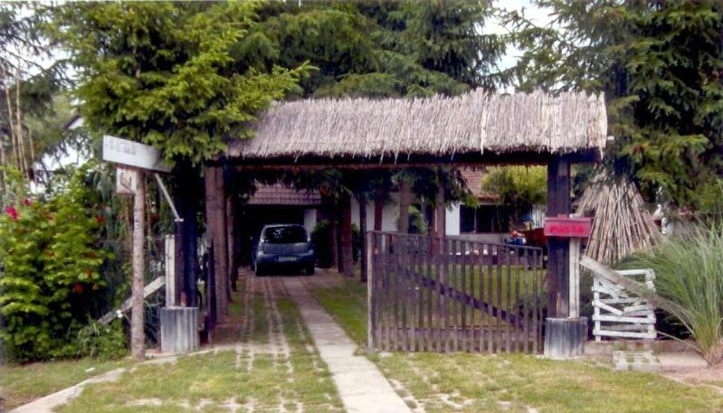
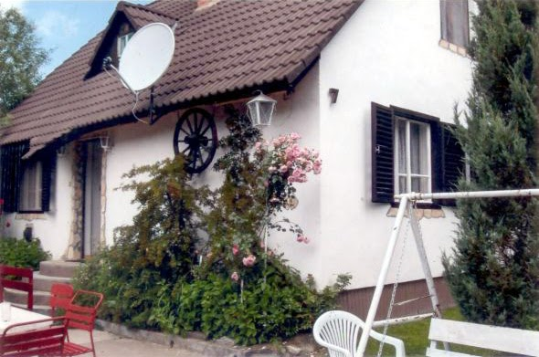
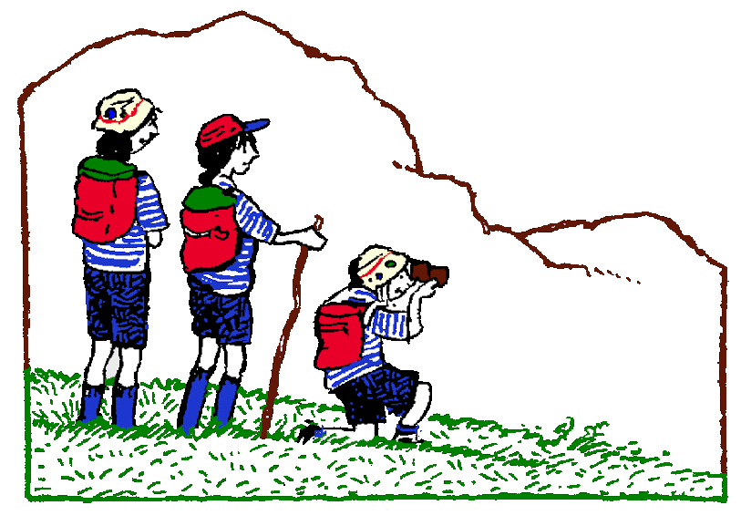

Jellemzők:
Telefon:+36301234567
e-m@il:kiadohaz@matraihaz.hu
Részletes leírás:
A ház lenti részén találhatóak a közös helyiségek és két szoba. Az emeleten található a további két szoba. Minden szobában 2 ágy található. Ágynemű és törölköző biztosított. Az étkezőben 8 személyes asztal található. Étkészlet is természetesen 8 főnek áll rendelkezésre.
|  |  | |
|
A ház minimum 2 éjszakára foglalható!
Áraink:
| Időtartam: | 1 - 4 fő esetén: | 5 - 8 fő esetén: |
|---|---|---|
| 2 éjszakára | 48 000 HUF | 64 000 HUF |
| 3 éjszakára | 67 500 HUF | 90 000 HUF |
| 4 éjszakára | 84 000 HUF | 112 000 HUF |
| 5 éjszakára | 97 500 HUF | 130 000 HUF |
| 6 éjszakára | 108 000 HUF | 144 000 HUF |
| 7 éjszakára | 115 000 HUF | 154 000 HUF |
7.éjszakától hosszabb tartózkodás esetén kérje egyedi ajánlatunkat!
Programajánló: